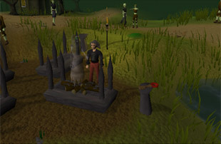
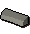
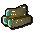
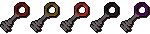
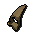
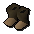

")
Schatten über Mort'ton
Einführung | Lage | Voraussetzungen | Empfohlene Ausrüstung
Wiederaufbau des Tempels | Die Schatten | Belohnungen | Entwicklung
Wiederaufbau des Tempels | Die Schatten | Belohnungen | Entwicklung
Nur RuneScape-Mitglieder haben Zugang zu diesem Minispiel. Wenn ihr euch anmeldet, könnt auch ihr dieses Feature nutzen.
Bitte beachtet, dass es sich hierbei um ein 'gefährliches' Minispiel handelt. Falls ihr während des Minispiels sterbt, werdet ihr eure Gegenstände verlieren.
Einführung

Mehr Informationen über 'Schatten über Mort'ton' findet ihr im Abschnitt über Abenteuer in unserer Spielanleitung.
Lage

Von hier aus müsst ihr nach Süden laufen (laufen empfiehlt sich, um die Schrecks zu vermeiden, die euer Essen verderben), bis ihr zu einer hölzernen Brücke kommt. Wenn ihr sie überquert habt, müsst ihr dem sich schlängelnden Pfad folgen, der euch in die Stadt Mort'ton bringen wird.
Abkürzung
Wenn ihr die beiden Abenteuer 'Myreque verzweifelt gesucht' und 'Ein Priester in Gefahr' abgeschlossen habt, könnt ihr in Morytania eine Abkürzung zum Mort-Myre-Sumpf benutzen.Als Erstes müsst ihr durch die kleine Falltür hinabsteigen, die sich hinter der Kneipe zum nüchternen Kater in Canifis befindet, um zum Versteck der Myreque zu gelangen. Nachdem ihr die Wand am anderen Ende des Raums durchsucht und durchschritten habt, befindet ihr euch in einem unterirdischen Durchgang, der euch zu großen Holztüren führt. Geht durch sie durch und ihr werdet euch im Mort-Myre-Sumpf wiederfinden.
Von hier aus solltet ihr nach Süden laufen (Laufen empfiehlt sich wieder, da die Schrecks euch angreifen und verletzen oder euer Essen verderben werden), bis ihr zu einer hölzernen Brücke kommt. Klettert den Baum hoch, um die Brücke zu überqueren und rechtsklickt dann auf den Baum, um die Option 'Runterklettern' auszuwählen. Geht weiter nach Süden, bis ihr das Boot erreicht.
Mit dem Boot könnt ihr kostenlos in den östlichen Teil Mort'tons reisen. Für die Rückfahrt müsst ihr Harry Paddelschon allerdings 10 Goldstücke geben.
Hinweis: Für beide Routen empfehlen wir, dass ihr eure gesegnete silberne Sichel und euren Druidenbeutel mitnehmt, um euch vor den Schrecks zu schützen. Diese Gegenstände erhaltet ihr im Abenteuer 'Der Geist der Natur'.
Voraussetzungen
Ihr müsst das Abenteuer 'Schatten über Mort'ton' abgeschlossen haben.
Empfohlene Ausrüstung
Da Mort'ton sehr abgelegen ist, kann der Ort sehr gefährlich sein. Die nächstgelegene Bank ist in Canifis, also müsst ihr selbst entscheiden, wie ihr am effektivsten die Schatten tötet und einäschert (wobei diejenigen unter euch, die 'Den Myreque zu Hilfe' abgeschlossen haben, Zugang zur Bank in Rottdorf haben, südlich von Canifis).
Um Scheiterhaufen-Scheite herzustellen, benötigt ihr als Erstes heiliges Öl. Dafür müsst ihr den Tempel wiederaufbauen, indem ihr von den folgenden Gegenständen Gebrauch macht:
|
Gegenstand |
Hier erhältlich |
![[Bild]](../../img/main/kbase/items/tools/hammer.gif) Hammer |
In den meisten Gemischtwarenläden. Ihr benötigt nur einen einzigen Hammer. |
![[Bild]](../../img/main/kbase/minigames/shades/olive_oil.gif) Oliven-Öl |
Erhältlich in Razmires Gemischtwarenladen. Wie viel ihr braucht, hängt davon ab, wie viel heiliges Öl ihr herstellen wollt. |
![[Bild]](../../img/main/kbase/minigames/trawler/swamp_paste.gif) Sumpfpaste |
Erhältlich in Razmires Baumarkt. Wenn ihr die Paste lieber selbst herstellen wollt, als sie zu kaufen, vermischt etwas Sumpfteer mit Mehl und kocht dann die entstandene Mischung. Sumpfteer findet man im Sumpf südlich von Lumbridge. Hiervon sind mindestens 20 erforderlich. |
![[Bild]](../../img/main/kbase/minigames/shades/limestone_block.gif) Kalkstein |
Erhältlich in Razmires Baumarkt. Kalkstein kann man westlich des Tempels des Mönchs von Zamorak abbauen, wo ihr das Abenteuer 'Ein Priester in Gefahr' angefangen habt. Hiervon solltet ihr 5 mitbringen. |
|  Kalksteinziegel |
Erhältlich in Razmires Baumarkt. Bearbeitet Kalkstein mit einem Meißel, um Ziegel herzustellen. Hiervon solltet ihr 5 mitbringen. |
![[Bild]](../../img/main/kbase/items/misc/beam.gif) Holzbalken |
Erhältlich in Razmires Baumarkt. Hiervon solltet ihr 5 mitbringen. |
Ihr solltet darüber nachdenken, Razmire einen Flamtaer-Hammer abzukaufen, da so eure Chancen steigen, die beschädigte Wand zu reparieren.
Um Razmire diese Materialien abzukaufen, müsst ihr einfach auf ihn klicken und ihm sagen, welchen seiner Läden ihr ansehen möchtet.
Natürlich könnt ihr auch auf ihn rechtsklicken und so schneller Zugriff auf den von euch benötigten Laden erhalten. Voraussetzung dafür ist, dass ihr das permanente Serum mit ihm benutzt habt, das man während des Abenteuers 'Schatten über Mort'ton' herstellt. Wenn ihr das noch nicht getan habt, könnt ihr ein Serum mit vorübergehender Wirkung mit ihm benutzen, sodass ihr mit ihm handeln könnt.
Wiederaufbau des Tempels
Sobald ihr alle Materialien habt, könnt ihr mit der Reparatur anfangen. Der Tempel befindet sich im Nordosten von Mort'ton. Ihr solltet euch allerdings auf eine Welt einloggen, auf der sich viele Leute befinden, oder ein paar Freunde mitbringen, da es so sehr viel einfacher ist, den Tempel wiederaufzubauen, während die Schatten versuchen, ihn wieder einzureißen.
![[Bild: Status der Tempel-Reparatur]](../../img/main/kbase/minigames/shades/temple_repair_status.gif "Status der Tempel-Reparatur") Jetzt müsst ihr auf die beschädigte Wand klicken, um mit der Reparatur loszulegen. Wenn ihr das getan habt, müsst ihr die Option 'Verstärken' auswählen, um die Wand vor den Schatten zu schützen. Während ihr das tut, könnt ihr zusehen, wie eure 'Heiligkeit' zunimmt - das seht ihr auf der Tempel-Reparatur-Übersicht in der rechten, oberen Ecke des Spielfensters.
Jetzt müsst ihr auf die beschädigte Wand klicken, um mit der Reparatur loszulegen. Wenn ihr das getan habt, müsst ihr die Option 'Verstärken' auswählen, um die Wand vor den Schatten zu schützen. Während ihr das tut, könnt ihr zusehen, wie eure 'Heiligkeit' zunimmt - das seht ihr auf der Tempel-Reparatur-Übersicht in der rechten, oberen Ecke des Spielfensters. Sobald eure 'Heiligkeit' 10 % oder mehr beträgt, könnt ihr den heiligen Feueraltar entfachen, der sich in der Mitte des Tempels befindet. Um das zu tun, müsst ihr einfach eure Zunderbüchse mit dem Altar benutzen. Danach könnt ihr euer Oliven-Öl mit der Flamme benutzen, um es in heiliges Öl zu verwandeln.
Bitte beachtet, dass eure 'Heiligkeit' auch steigt, wenn ihr den Tempel verteidigt und Loar-Schatten besiegt. Das Amulett der Salve (das man während des Abenteuers 'Die Geistermine' erhält) ist besonders hilfreich bei der Bekämpfung von Schatten, da es einen Kampfbonus gegen Untote verleiht.
Die Schatten
Schatten sind die Überbleibsel längst verstorbener Seelen. Sie können äußerst gefährlich sein. Bitte schaut euch die Tabelle unten an, um zu sehen, welche Schatten welche Kampfstufen haben.
|
Schatten |
Kampfstufe |
Lage |
![[Bild]](../../img/main/kbase/minigames/shades/loar_shade.gif) Loar-Schatten |
40 | Zu finden überall in Mort'ton. |
![[Bild]](../../img/main/kbase/minigames/shades/phrin_shade.gif) Phrin-Schatten |
60 | Zu finden in dem kleinen Raum, wenn man das Grab betritt. |
![[Bild]](../../img/main/kbase/minigames/shades/riyl_shade.gif) Riyl-Schatten |
80 | Zu finden in dem Raum hinter der Stahltür. |
![[Bild]](../../img/main/kbase/minigames/shades/asyn_shade.gif) Asyn-Schatten |
100 | Zu finden in dem großen Bereich hinter der Schwarztür. |
![[Bild]](../../img/main/kbase/minigames/shades/fiyr_shade.gif) Fiyr-Schatten |
120 | Zu finden hinter der Silbertür. |
Loar-Schatten findet man überall in Mort'ton. Die anderen Schattenarten hingegen befinden sich in dem Grab. Ihr braucht mindestens einen Bronze-Schlüssel, um das Grab zu betreten. Diesen erhaltet ihr, wenn ihr einen Loar-Schatten der Stufe 40 einäschert.

Um Schatten einzuäschern, benötigt ihr die folgenden Gegenstände:
|
Gegenstand |
Hier erhältlich |
![[Bild]](../../img/main/kbase/items/lanturns_candle_torch/tinderbox.gif) Zunderbüchse |
In den meisten Gemischtwarenläden. Ihr benötigt nur eine einzige Zunderbüchse. |
![[Bild]](../../img/main/kbase/items/potions/other_potions/sacredoil.gif) Heiliges Öl |
Das Öl könnt ihr herstellen, indem ihr Oliven-Öl (welches ihr in Razmires Gemischtwarenladen kaufen könnt) mit der heiligen Flamme des Tempels benutzt, während sich eure 'Heiligkeit' auf mindestens 10 % befindet. Bringt so viele mit, wie ihr benötigt. |
![[Bild]](../../img/main/kbase/items/logs/normal_pyre_logs.gif) Scheiterhaufen-Scheite |
Diese erhaltet ihr, wenn ihr heiliges Öl mit Scheiten (egal, welcher Art) benutzt. Bringt so viele mit, wie ihr benötigt. |
![[Bild]](../../img/main/kbase/items/remains/loarash.gif) Überreste der Schatten |
Diese erhaltet ihr, wenn ihr Schatten (egal, welcher Art) tötet. Bringt so viele mit, wie ihr benötigt. |
Wie man Schatten verbrennt
![[Bild]](../../img/main/kbase/minigames/shades/burning_shade.gif) Um die Schatten zu verbrennen, braucht ihr verschiedene Arten von Scheiterhaufen-Scheiten. Diese könnt ihr herstellen, indem ihr heiliges Öl mit den von euch benötigten Scheiten benutzt. Für verschiedene Arten von Scheiten sind verschieden viele Dosen heiligen Öls nötig - siehe Tabelle weiter unten.
Um die Schatten zu verbrennen, braucht ihr verschiedene Arten von Scheiterhaufen-Scheiten. Diese könnt ihr herstellen, indem ihr heiliges Öl mit den von euch benötigten Scheiten benutzt. Für verschiedene Arten von Scheiten sind verschieden viele Dosen heiligen Öls nötig - siehe Tabelle weiter unten. Ihr müsst die benötigten Scheiterhaufen-Scheite dann auf die Scheiterhaufen legen, die ihr während des Abenteuers 'Schatten über Mort'ton' benutzt habt, und die Überreste der Schatten dann obendrauf. Wenn ihr das getan habt, könnt ihr den Scheiterhaufen mit eurer Zunderbüchse entfachen, um die Überreste einzuäschern. Dafür erhaltet ihr EP in Gebet und Funkenschlagen.
Die folgende Tabelle zeigt euch, wie viel EP ihr für das Verbrennen der Schatten erhaltet und was ihr dafür benötigt:
| Benötigte Scheite | Benötigte Stufen | Dosen des heiligen Öls | Zu verbrennende Schatten | EP in Funkenschlagen |
Normale Scheite |
5 |
2 | Loar-, Phrin-Schatten | 50 |
![[Bild]](../../img/main/kbase/items/logs/oak_pyre_logs.gif) Eichen-Scheite |
20 |
2 | Loar-, Phrin-Schatten | 70 |
![[Bild]](../../img/main/kbase/items/logs/willow_pyre_logs.gif) Weiden-Scheite |
35 |
3 | Loar-, Phrin-, Riyl-Schatten | 100 |
![[Bild]](../../img/main/kbase/items/logs/teak_logs.gif) Teak-Scheite |
40 |
3 | Loar-, Phrin-, Riyl-Schatten | 120 |
![[Bild]](../../img/main/kbase/items/logs/arctic_pine_pyre.gif) Winterkiefern-Scheite |
47 |
3 | Loar-, Phrin-, Riyl-Schatten | 158 |
![[Bild]](../../img/main/kbase/items/logs/maple_pyre_logs.gif) Ahorn-Scheite |
50 |
3 | Loar-, Phrin-, Riyl-Schatten | 175 |
![[Bild]](../../img/main/kbase/items/logs/mahogany_logs.gif) Mahagoni-Scheite |
55 |
3 | Loar-, Phrin-, Riyl-Schatten | 210 |
![[Bild]](../../img/main/kbase/items/logs/eucalyptus_pyre_logs.gif) Eukalyptus-Scheite |
63 |
4 | Loar-, Phrin-, Riyl-, Asyn-Schatten | 246 |
![[Bild]](../../img/main/kbase/items/logs/yew_pyre_logs.gif) Eiben-Scheite |
65 |
4 | Loar-, Phrin-, Riyl-, Asyn-Schatten | 255 |
|  Magie-Scheite |
80 |
4 | Loar-, Phrin-, Riyl-, Asyn-, Fiyr-Schatten | 404,5 |
|
Benutzte Scheite |
EP in Gebet pro Loar-Schatten |
![[Bild]](../../img/main/kbase/items/remains/phrinash.gif)
EP in Gebet pro Phrin-Schatten |
![[Bild]](../../img/main/kbase/items/remains/riylash.gif)
EP in Gebet pro Riyl-Schatten |
![[Bild]](../../img/main/kbase/items/remains/asynash.gif)
EP in Gebet pro Asyn-Schatten |
![[Bild]](../../img/main/kbase/items/remains/fiyrash.gif)
EP in Gebet pro Fiyr-Schatten |
Normale Scheite |
25 | 37,5 | keine | keine | keine |
Eichen-Scheite |
33 | 45,5 | keine | keine | keine |
Weiden-Scheite |
33,5 | 46 | 61 | keine | keine |
![[Bild]](../../img/main/kbase/items/logs/teak_pyre_logs.gif) Teak-Scheite |
33,7 | 46,2 | 61,2 | keine | keine |
Winterkiefern-Scheite |
33,9 | 46,4 | 61,4 | keine | keine |
Ahorn-Scheite |
34 | 46,5 | 61,5 | keine | keine |
![[Bild]](../../img/main/kbase/items/logs/mahogany_pyre_logs.gif) Mahagoni-Scheite |
34,3 | 46,8 | 61,8 | keine | keine |
Eukalyptus-Scheite |
34,4 | 46,9 | 61,9 | 79,4 | keine |
Eiben-Scheite |
34,5 | 47 | 62 | 79,5 | keine |
Magie-Scheite |
35 | 47,5 | 62,5 | 80 | 100 |
Belohnungen
Wenn der Schatten eingeäschert wurde, erscheinen ein Schatten-Schlüssel oder Goldmünzen neben dem Scheiterhaufen. Mithilfe der Schlüssel kann man das Grab betreten (siehe Karte des Grabs oben), das sich nordwestlich von Mort'ton befindet. Dort könnt ihr höherstufige Schatten bekämpfen und auch eine Truhe des jeweiligen Typs öffnen. Um die entsprechende Tür zu öffnen, braucht ihr den Schlüssel aus dem gleichen Metall in eurem Inventar.
|
Mögliche Beute |
![[Bild]](../../img/main/kbase/minigames/shades/bronze_keys.gif)
Bronze-Schlüssel Goldmünzen, Sumpfpaste, Hinweis-Schriftrolle Stufe 1, Chaos-Runen, Saphir-Ring, Amulett der Verteidigung, Silber-Barren, Gold-Barren, Mithril-Barren, Magierstab, Stahl-Axt, Stahl-Halbhelm, Stahl-Speer, Stahl-Speer (g), Stahl-Streitkolben, Stahl-Krummsäbel, Stahl-Schwert, Stahl-Langschwert, Schwarz-Axt, Schwarz-Dolch, Schwarz-Dolch (g), Schwarz-Speer, Schwarz-Streitkolben, Mithril-Dolch, Mithril-Dolch (g) |
| 
Stahl-Schlüssel Goldmünzen, Sumpfpaste, feiner Stoff, Hinweis-Schriftrolle Stufe 2, Chaos-Runen, Natur-Runen, Adamant-Barren, Weiden-Scheite, Smaragd-Ring, Amulett der Stärke, Nieten-Leder-Beinlinge, Stahl-Kettenhemd, Stahl-Pentaschild, Stahl-Kriegshammer, Stahl-Zweihänder, Stahl-Streitaxt, Schwarz-Halbhelm, Schwarz-Kriegshammer, Schwarz-Krummsäbel, Schwarz-Schwert, Schwarz-Langschwert, Schwarz-Speer, Mithril-Halbhelm, Mithril-Streitkolben, Mithril-Speer, Mithril-Speer (g), Mithril-Schwert, Adamant-Dolch, Adamant-Dolch (g) |
![[Bild]](../../img/main/kbase/minigames/shades/black_keys.gif)
Schwarz-Schlüssel Goldmünzen, Sumpfpaste, feiner Stoff, Hinweis-Schriftrolle Stufe 2, Natur-Runen, Jenseits-Runen, Flamtaer-Hammer, Weiden-Scheite, Eiben-Scheite, Rubin-Ring, Amulett der Magie, Luft-Stab, Erd-Stab, Wasser-Stab, Feuer-Stab, Stahl-Plattenrock, Schwarz-Kettenhemd, Schwarz-Pentaschild, Schwarz-Vierecksschild, Schwarz-Plattenbeinlinge, Schwarz-Vollhelm, Schwarz-Streitaxt, Schwarz-Zweihänder, Mithril-Pentaschild, Mithril-Vollhelm, Mithril-Plattenbeinlinge, Mithril-Vierecksschild, Mithril-Kettenhemd, Mithril-Krummsäbel, Mithril-Zweihänder, Mithril-Kriegshammer, Mithril-Streitaxt, Mithril-Streitkolben, Mithril-Langschwert, Adamant-Halbhelm, Adamant-Krummsäbel, Adamant-Schwert, Adamant-Axt |
![[Bild]](../../img/main/kbase/minigames/shades/silver_keys.gif)
Silber-Schlüssel Goldmünzen, Sumpfpaste, feiner Stoff, Hinweis-Schriftrolle Stufe 3, Jenseits-Runen, Blut-Runen, Kampfstab, Eiben-Scheite, Magie-Scheite, Amulett der Macht, Diamant-Ring, Flamtaer-Hammer, Mithril-Plattenrock, Mithril-Plattenpanzer, Schwarz-Plattenpanzer, Schwarz-Speer, Adamant-Kettenhemd, Adamant-Vollhelm, Adamant-Plattenpanzer, Adamant-Vierecksschild, Adamant-Pentaschild, Adamant-Speer, Adamant-Speer (g), Adamant-Streitaxt, Adamant-Zweihänder, Adamant-Langschwert, Adamant-Kriegshammer, Runit-Kettenhemd, Runit-Halbhelm, Runit-Schwert, Runit-Krummsäbel, Runit-Langschwert |
Feiner Stoff
Hin und wieder findet man in den Truhen feinen Stoff als Belohnung. Aus diesem Stoff kann man Spaltrinden-Rüstzeug (siehe unten) herstellen.Wenn ihr höherstufige Schatten einäschert, steigen die Chancen, dass ihr auch einen 'höherstufigen' Schlüssel erhaltet. Dies wiederum erhöht die Wahrscheinlichkeit, dass ihr feinen Stoff in der Truhe eines Schatten findet.
Spaltrinden-Rüstzeug
![[Bild]](../../img/main/kbase/minigames/shades/splitbark_armour.gif) Wenn ihr euer Spaltrinden-Rüstzeug selbst herstellen möchtet, müsst ihr nur die benötigten Materialien für die einzelnen Teile dabeihaben und mit dem Magier im Turm der Magier sprechen, der selbst Rüstzeug trägt.
Wenn ihr euer Spaltrinden-Rüstzeug selbst herstellen möchtet, müsst ihr nur die benötigten Materialien für die einzelnen Teile dabeihaben und mit dem Magier im Turm der Magier sprechen, der selbst Rüstzeug trägt. Der Turm befindet sich südlich von Dorf Draynor, am anderen Ende einer steinernen Brücke.
Um dieses Rüstzeug tragen zu können, benötigt ihr Verteidigung und Magie jeweils auf Stufe 40.
Hier eine Übersicht über alles, was ihr über Spaltrinden-Rüstzeug wissen müsst:
| Gegenstand | Benötigte Rinde | Benötigter feiner Stoff | Preis | ||||||||||||||||
| Angriffsboni | Verteidigungsboni | Sonstiges | |||||||||||||||||
![[Bild: Stechen]](../../img/main/kbase/table_text/stab1.gif "Stechen") |
![[Bild: Schlitzen]](../../img/main/kbase/table_text/slash1.gif "Schlitzen") |
![[Bild: Schmettern]](../../img/main/kbase/table_text/crush1.gif "Schmettern") |
![[image: Magie]](../../img/main/kbase/table_text/magic1.gif "Magie") |
![[Bild: Fernkampf]](../../img/main/kbase/table_text/range1.gif "Fernkampf") |
|
|
|
|
|
![[Bild: Stärke]](../../img/main/kbase/table_text/strength1.gif "Stärke") |
![[Bild: Gebet]](../../img/main/kbase/table_text/prayer1.gif "Gebet") |
||||||||
|  Spaltrinden-Helm (M) |
2 | 2 | 6.000 Goldmünzen | + 0 | + 0 | + 0 | + 3 | - 2 | + 10 | + 9 | + 11 | + 3 | + 0 | + 7 | + 0 | + 0 | |||
![[Bild]](../../img/main/kbase/armour/mage/splitbarktop1.gif) Spaltrinden-Harnisch (M) |
4 | 4 | 37.000 Goldmünzen | + 0 | + 0 | + 0 | + 10 | - 10 | + 36 | + 26 | +42 | + 15 | + 0 | + 40 | + 0 | + 0 | |||
![[Bild]](../../img/main/kbase/armour/mage/splitbarkbottom1.gif) Spaltrinden-Beinlinge (M) |
3 | 3 | 32.000 Goldmünzen | + 0 | + 0 | + 0 | + 7 | - 7 | + 22 | + 20 | + 25 | + 10 | + 0 | + 15 | + 0 | + 0 | |||
![[Bild]](../../img/main/kbase/armour/mage/splitbarkgloves1.gif) Spaltrinden-Handschuhe (M) |
1 | 1 | 1.000 Goldmünzen | + 0 | + 0 | + 0 | + 2 | - 1 | + 3 | + 2 | + 4 | + 2 | + 0 | + 3 | + 0 | + 0 | |||
|  Spaltrinden-Stiefel (M) |
1 | 1 | 1.000 Goldmünzen | + 0 | + 0 | + 0 | + 2 | - 1 | + 3 | + 2 | + 4 | + 2 | + 0 | + 9 | + 0 | + 0 | |||
Hinweis: Rinde erhaltet ihr, wenn ihr Hohlbäume fällt, die sich im verfluchten Wald östlich von Canifis befinden. Bitte vergesst aber nicht, dass in diesem Wald aggressive Monster herumschleichen...
Entwicklung
Entwicklung: Tytn H
Grafik: Tony A-V
Qualitätssicherung: Danny G
Audio: Ian T

Weitere Artikel in Minispiele
|
|
|
Weiterführende Informationen Wenn euch dieser Artikel nicht weitergeholfen hat, könnt ihr in den folgenden Kapiteln der RuneScape-Webseite mehr Informationen finden:
|
|